Introduction
"Welcome to my portfolio! I am an IT student with a strong passion for software programming, web development, and multimedia arts, dedicated to building engaging visual and digital experiences."
2nd Year & ACT2-C
"Welcome to my portfolio! I am an IT student with a strong passion for software programming, web development, and multimedia arts, dedicated to building engaging visual and digital experiences."
"Expressing Passion Through Code & Creativity"
I am Aldrin P. Yancha, 27 years old. I am an independent and introverted person who loves learning about technology and the arts. I enjoy exploring new knowledge in the fields of IT and digital media.
Bachelor of Science in Information Technology (BSIT)
Datamex College of Saint Adeline - Fairview
Playing Minecraft
Playing Clash of Clans
Playing Guitar
Playing Piano
Sketching
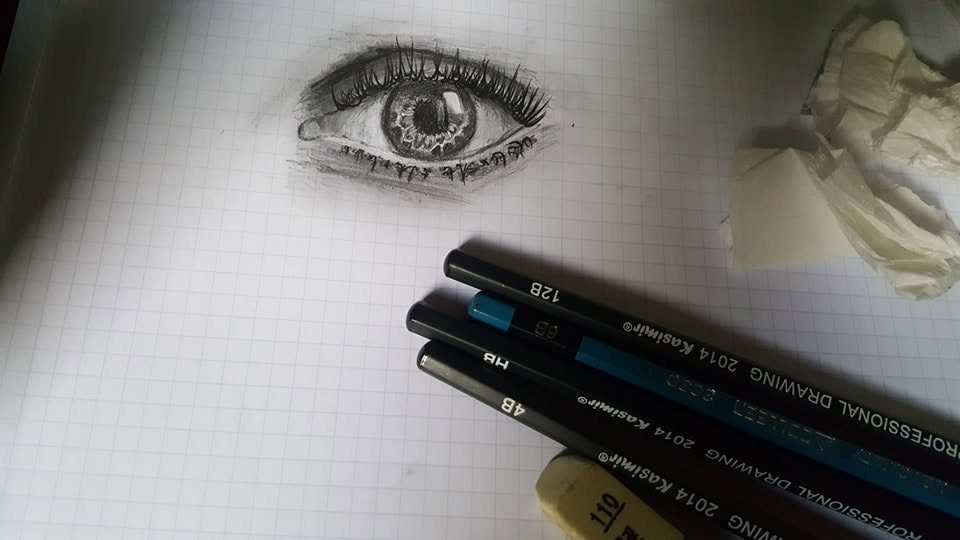
Reading the Bible
Animation
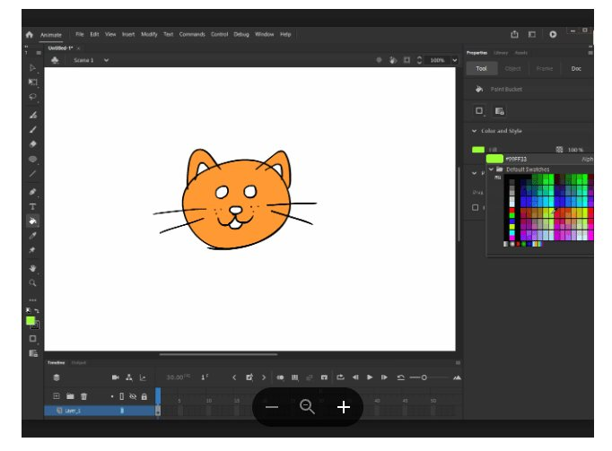
Game Development
Web Development
Film Editing
Photo Editing (Adobe Photoshop)
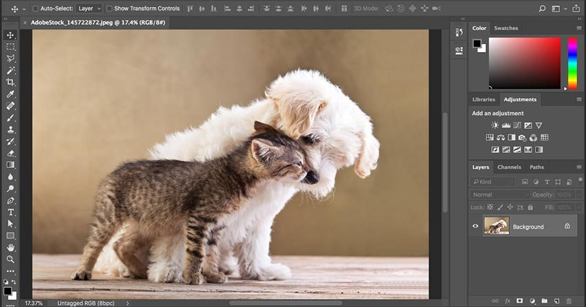
Music Production
Graphic Designer
Proficient in editing high-quality videos, cinematic cuts, and engaging visual stories using Adobe Premiere Pro, CapCut, and Filmora.
Skilled in desktop application development, database management, and building structured user interfaces using Visual Basic 6.0.
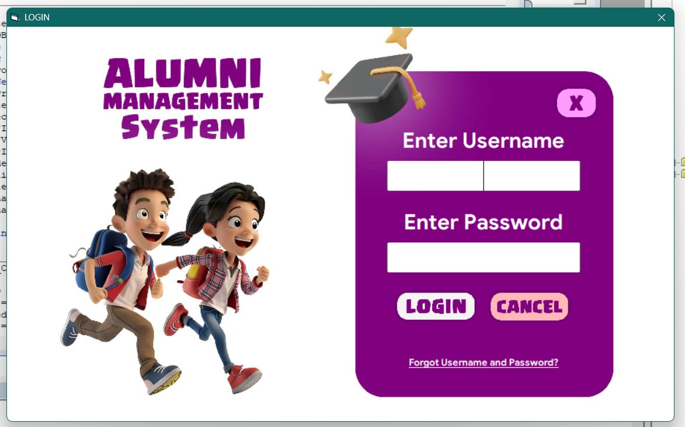
Experienced in photo manipulation, graphic design, and color grading using Adobe Photoshop, Snapseed, and Canva.
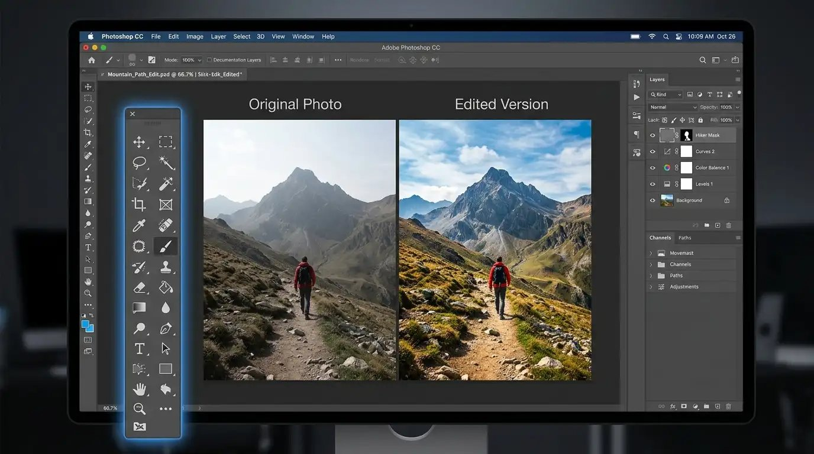
Capable of designing responsive, dynamic, and interactive web layouts using HTML, CSS, and JavaScript.
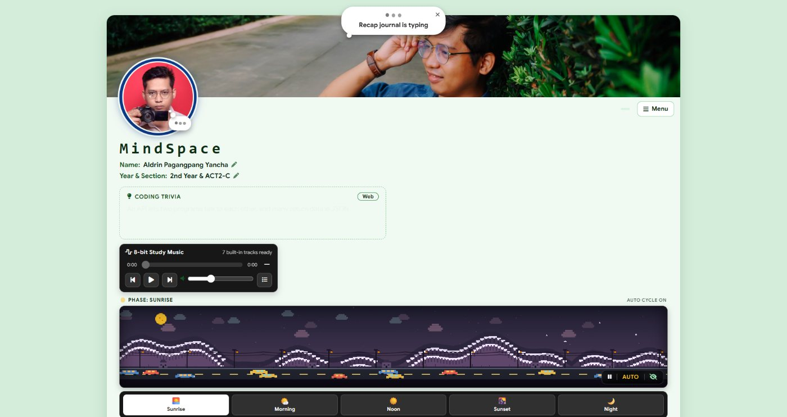
Skilled in audio mixing, beat making, and sound composition using FL Studio.
Experienced in capturing high-quality images, creative portraits, and aesthetic shots using DSLR and digital cameras.
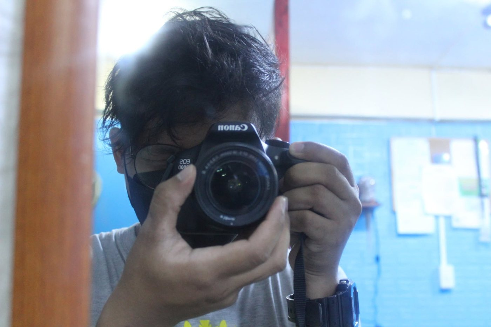
Skilled in filming smooth video footage, vlogs, and event coverage using handheld gimbals, mobile devices, and compact digital cameras.
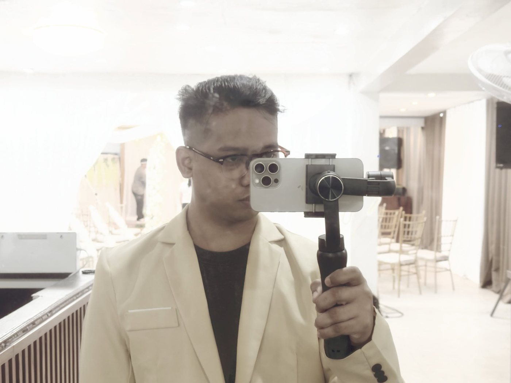
Proficient in foundational programming concepts, logic formulation, and algorithm design using C++.
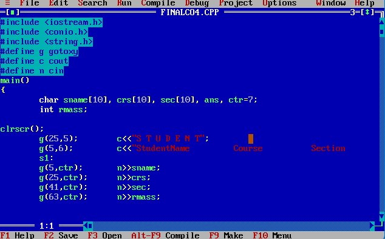
LifeNotes is a comprehensive personal desktop productivity application developed using Visual Basic 6.0 and stored locally on the desktop, featuring a Microsoft Access database (aldrin.mdb) connected via OLEDB to efficiently manage and store user data.
The application incorporates a robust security and navigation structure, beginning with a secure login interface (frmlogin.frm) for user authentication, an auxiliary privacy PIN lock module (frmpin.frm) to safeguard sensitive personal entries, and a centralized main dashboard (frmmaindashboard.frm) that serves as the primary hub for navigating through the system's various features.
Furthermore, it integrates dedicated core modules tailored for personal growth and organization, including a notes manager (frmnotes.frm) for recording and categorizing thoughts, a daily journaling section (frmjournal.frm) for documenting daily life experiences and personal stories, and a spiritual devotions module (frmdevotions.frm) dedicated to Bible verses, reflections, and quiet time notes.
The system is rounded out by comprehensive settings and information pages (frmsettings.frm and frmabout.frm) for application customization and developer credits. Because the entire project is built on the legacy Visual Basic 6.0 framework, it natively operates within a 32-bit (x86) architecture environment, which inherently explains why it requires x86-compatible database drivers and ActiveX components to function smoothly compared to 64-bit systems.
Technologies: Visual Basic 6.0
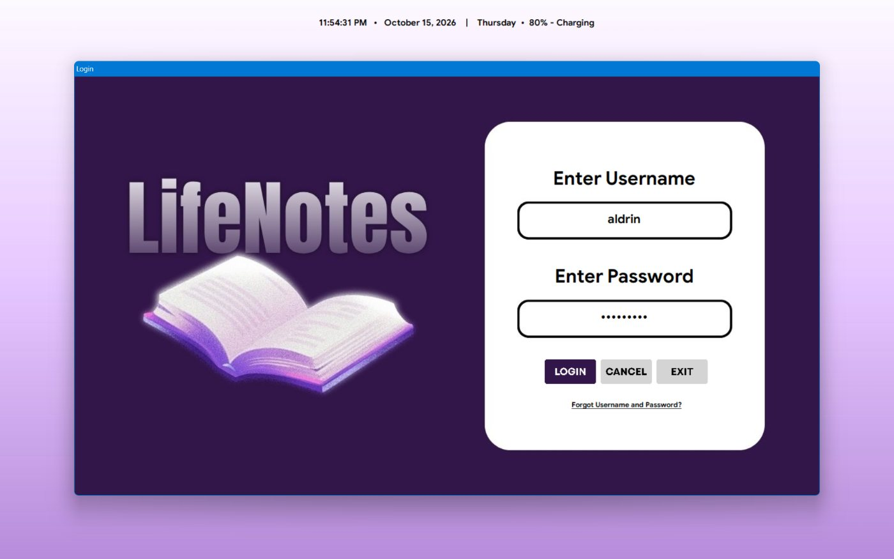
MindSpace (v2.60 BETA) is a complete, standalone, and feature-rich web application that serves as a personal workspace, reviewer, code notebook, and study feed packaged into a single HTML file containing CSS, JavaScript, and required libraries such as html2canvas and highlight.js.
It includes meta tags for mobile responsive design, viewport-fit=cover support for modern screen notches, and color themes. It utilizes IndexedDB (MindSpaceMediaDB) for large media files like profile pictures, banners, and audio tracks to prevent localStorage limitations, along with mechanisms for GPU acceleration and a performance mode.
It also supports Light Mode, Dark Mode (Monochrome), and a Liquid Glass Theme.
The application features a YouTube-style loading screen with a top loading bar and loading animation, as well as a First-Time Tutorial and Spotlight system using a floating guide card to guide new users.
In terms of UI, it highlights a customizable banner and profile picture with a story ring for the Journal/My Day feature, alongside a side media toolbar for switching images, exporting/importing data, and opening the source code.
Its tabs house a Study Feed for questions and reviewers, floating Sticky Notes in yellow, blue, and green designs, and a Live Accuracy Score serving as a scroll progress meter. It also includes a Code Notepad & Line-by-Line Memorize Trainer for code memorization with real-time validation, a Reviewer Image Gallery with zoom and cropping tools, and a Bible Books / Chapter Reader with a carousel view.
For recreation, it contains Break Time Games like Glow Snake, Pixel Tetris, Memory Card Match, and Tic-Tac-Toe, alongside BSIT Games such as interactive quizzes and word shuffle. It features a Recap Journal / My Day system with an animated typing effect and the ability to capture PNG screenshots using html2canvas, plus a Community Lounge feed for wellness quotes, likes, and liked post history.
Lastly, it incorporates a Developer Console for performance metrics and error logs, as well as a Full MindSpace Code Viewer that displays the complete source code with syntax highlighting and line numbers.
Technologies: HTML, CSS and JavaScript
Film Production Equipment Tracker System is a Python-based CLI application developed to manage and organize film equipment inventory.
It supports complete CRUD functionalities—allowing users to add, view, search, update, and delete equipment records based on categories like Camera, Audio, Lighting, and Props.
Designed for media workflows, it tracks item statuses and assigned crew members to ensure seamless production operations.
Technologies: Python
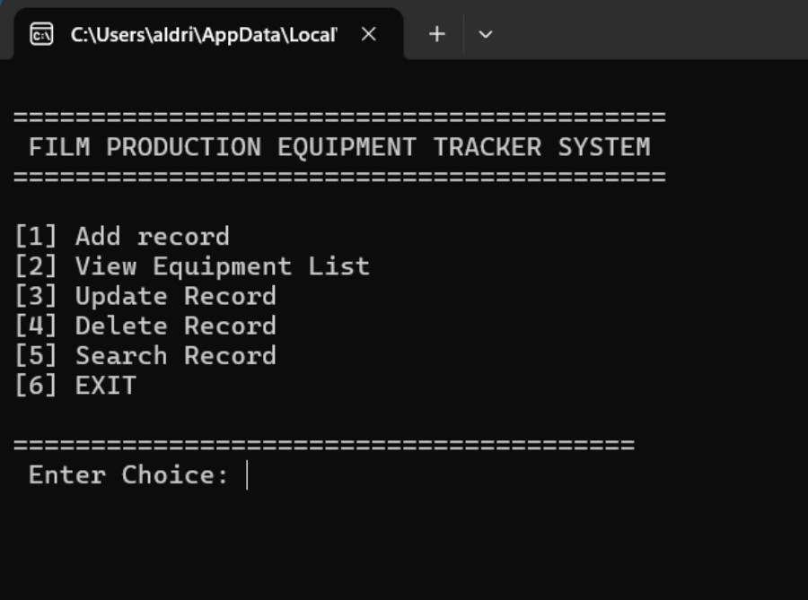
Achieved Rank 3 with a Final Grade of 99.33 during the First Semester (Prelim), Academic Year 2026–2027 at Datamex College of Saint Adeline – Fairview Branch.
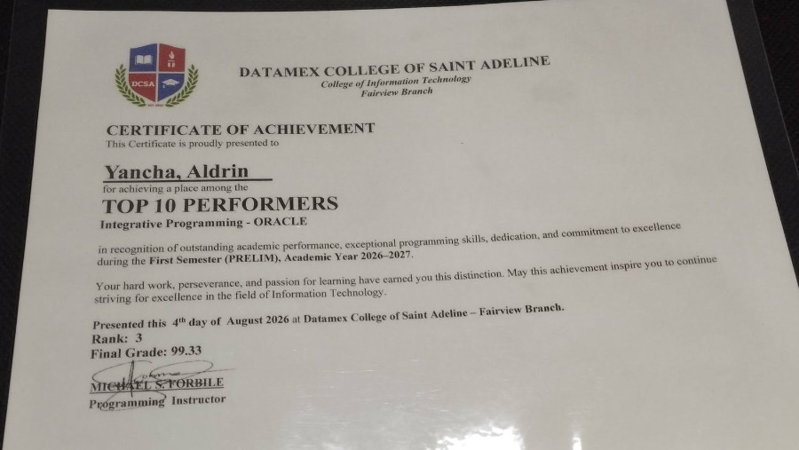
Achieved Rank 6 with a Midterm Grade of 97.6 during the First Semester (Midterm), Academic Year 2026–2027.
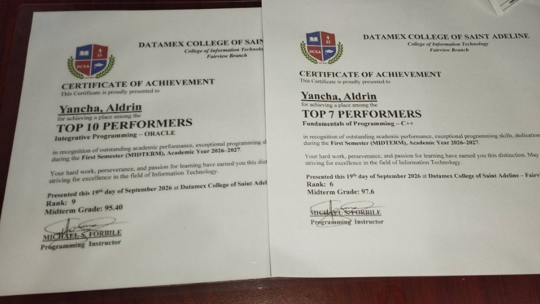
Achieved Rank 9 with a Midterm Grade of 95.40 during the First Semester (Midterm), Academic Year 2026–2027.
Achieved Rank 3 with a Midterm Grade of 99.68 during the First Semester (Prefinal), Academic Year 2026–2027.
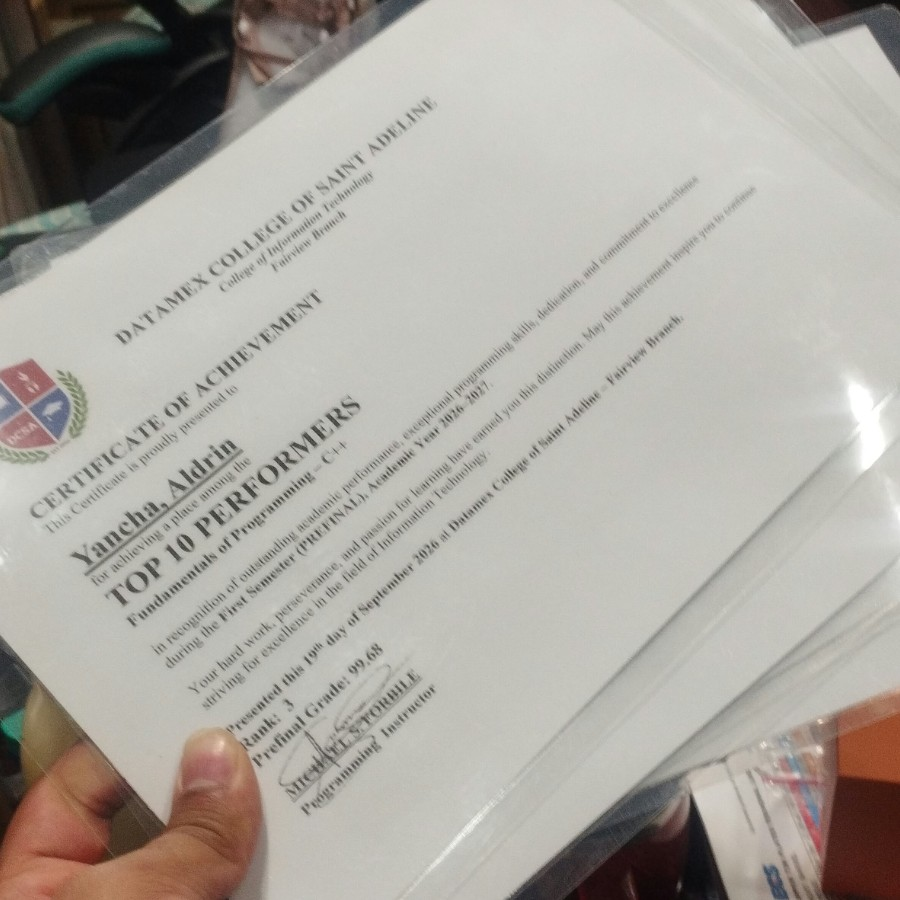
Combine tech and creativity to direct, edit, and produce impactful short films, visual stories, and dynamic commercial video content.
Master full-stack technologies to design interactive web workspaces, cloud-connected databases, and desktop applications.
Pursue a Bachelor of Multimedia Arts after graduating with BSIT to further bridge code, graphic design, animation, and filmmaking.
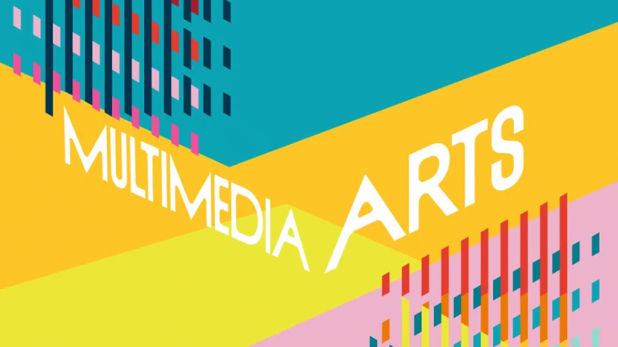
Write a reminder or idea here.
Bali sa Monday na ito ipapasa po!
Want more productivity tools?
Write about a story or experience from your day.
Puro kasi kain ginagawa ko so ayun financial problem na nga.
Want more productivity tools?
Create simple flashcards to help you study.
1 / 3
1. One plus one?
2. x + x ?
3. Sinong cute?
Want more productivity tools?